Portfolio
Hiukan vaiketa laittaa juuri minun tekemiäni koodinpätkiä, koska olin
tekemässä/auttamassa monessa asiassa, mutta ne eivät silloin ole juuri
minun. Sekä AWS jonka kanssa tein paljon hommia, niin siitä en voi
oikein näyttää mitään erityisempää.
Testaus roolini asiat jäivät myös portfoliota varten aika vähäisiksi.
Muutenkin projektissamme testaus asioihin käytettiin varmaan enemmän
aikaa sen suunnitteluun kun sen tekoon
Backend:
Olin tekemässä controllereita, reittejä, modelin suunnittelua ja S3 toiminnan tekeminen
Monet ovat siis samanlaisia joten näytän yhden esimerkin, jonka tein ja johon kului eniten aikaa
S3 controller:
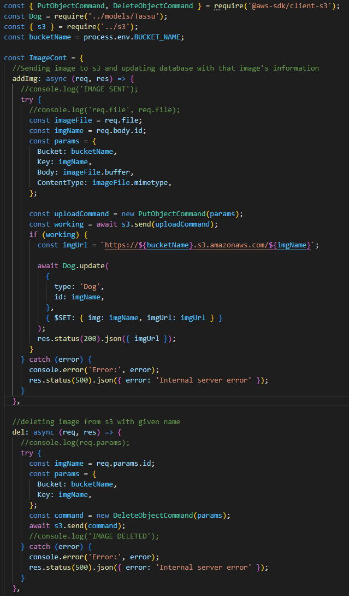
S3 routes:
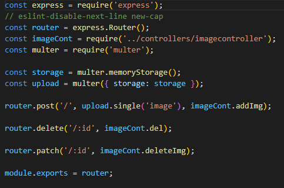S3 connection:
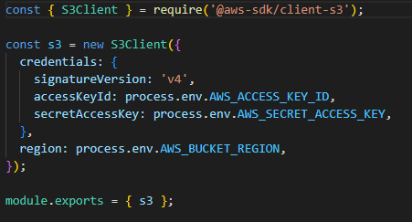Database model:
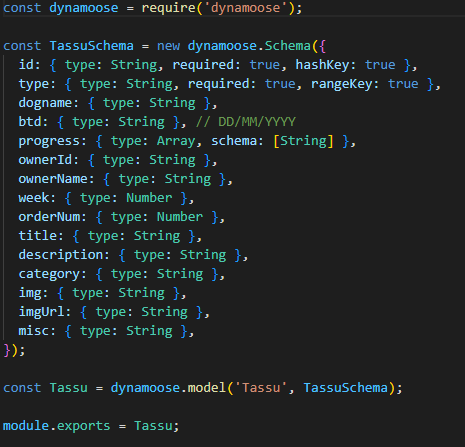DB connection:
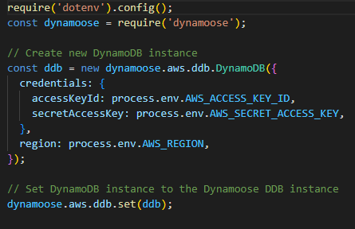Lisäksi tein oman Google kirjautumisen, joka jäi kesken, koska meillä oli jo toimiva sellainen.
Kirjautumisen pohjana käytin Tommi Tuikan tekemää kirjautumista, joten backend ei muuttunut oikeastaan paljoa lainkaan, kuin vain payload.
Frontend:
Näytän Sveltestäkin ainakin tekemäni S3 liittyvät koodit
Add dog:
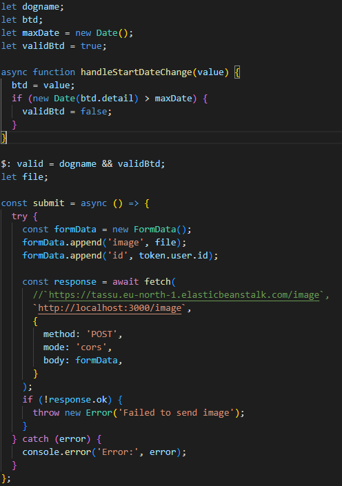 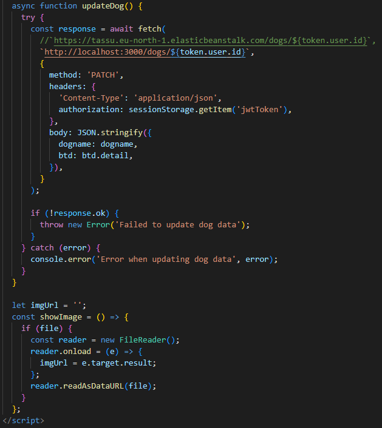 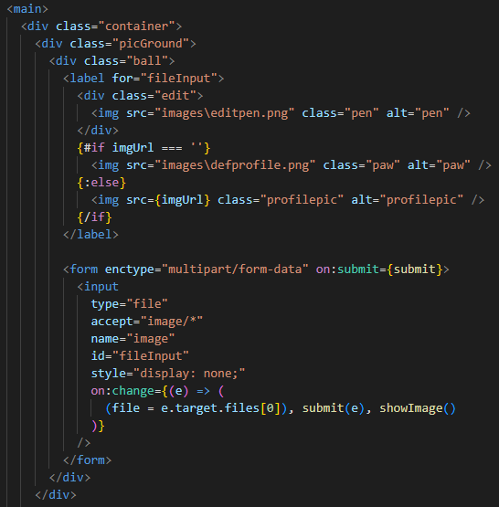+ Image deleting:
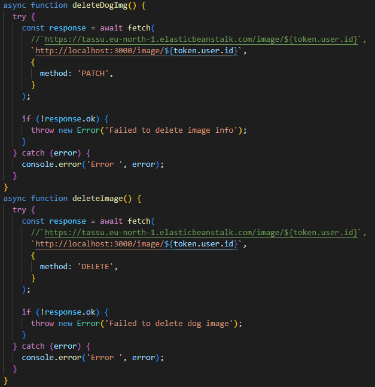Footer:
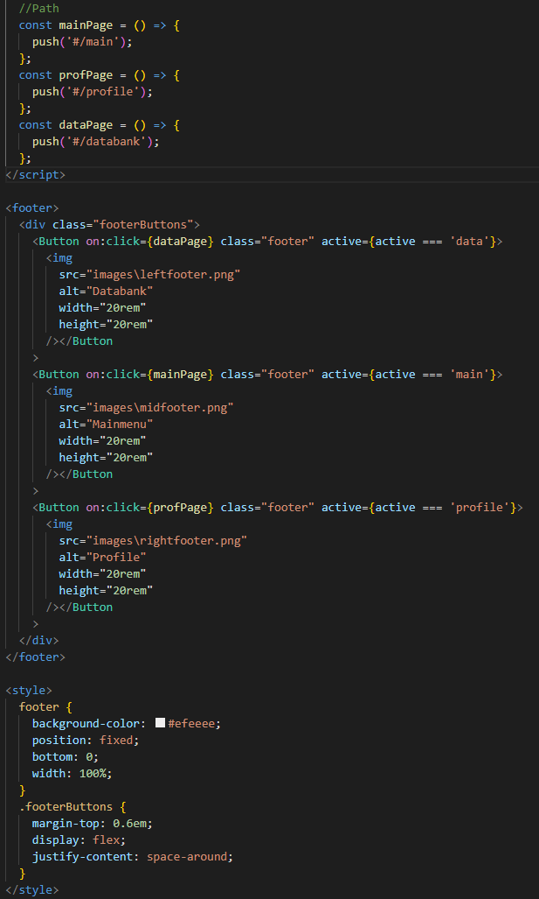Google kirjautumis koodia mitä ei käytetty ja jotka jäi kesken:
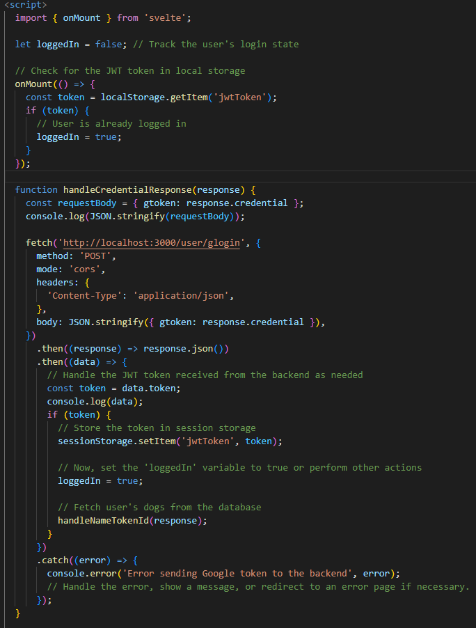 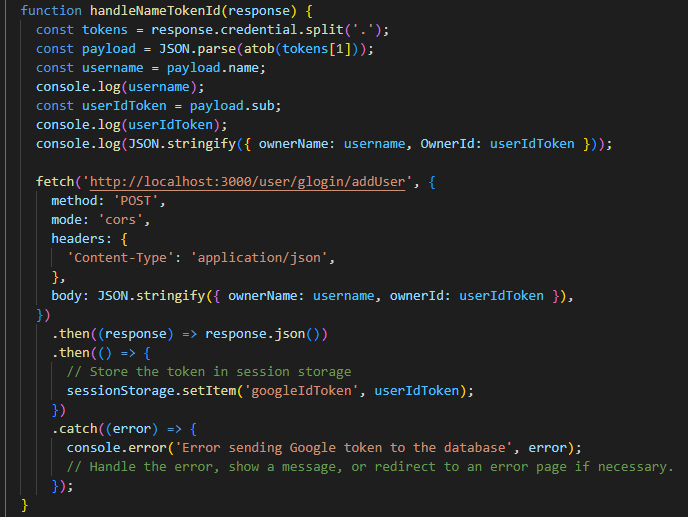 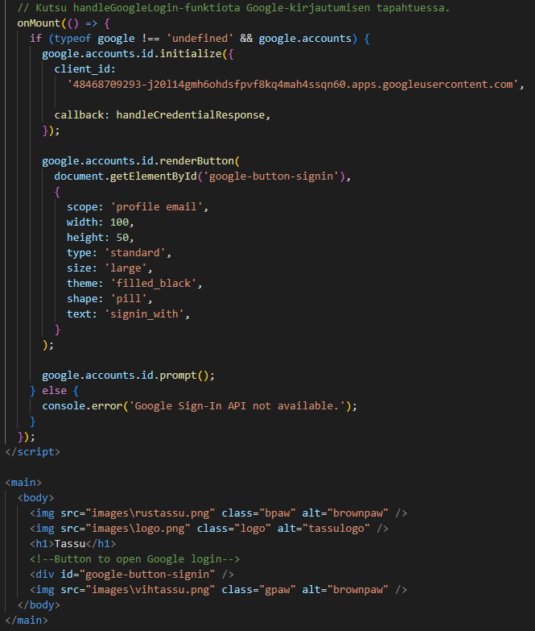Testaus:
Testaus jäi suurimmalta osalta vain sen suunniteluksi ja sen tarkastamiseksi. Testaus jaettiin frontille ja backille.
Testausta en tehnyt yksin, mutta tässä meidän testi koodi backendin puolelta.
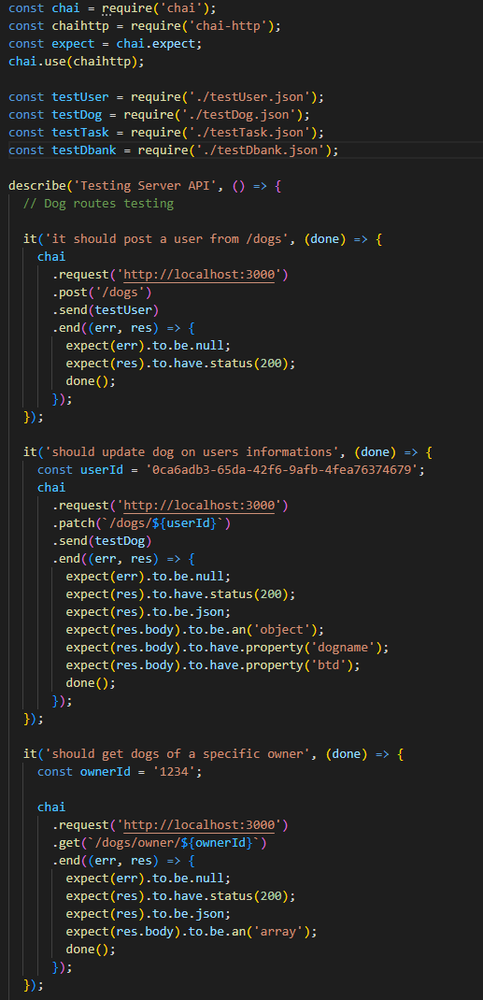 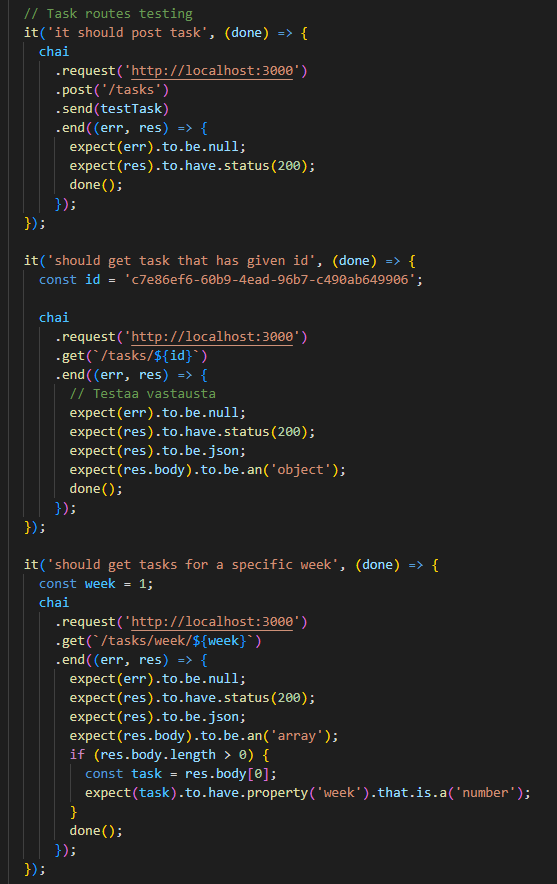 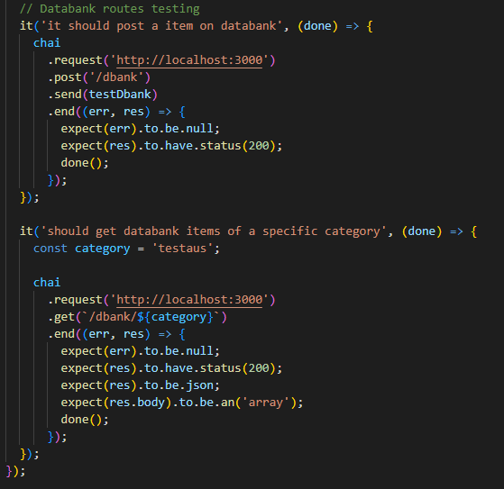